Proyecto: Lab Catalog Fecha: 20 de noviembre de 2026
Frontend: http://localhost:8501 API: http://127.0.0.1:8000
Resultado general: 20/20 pruebas automatizadas PASS
api.main:app; creación corregida con ID y código interno; API y frontend activos en sus puertos configurados.| ID | Caso | Pasos | Resultado esperado | Estado |
|---|---|---|---|---|
| SM-01 | Carga inicial | Abrir 8501 y esperar carga. | Resumen con métricas y gráficos. | PASS |
| SM-02 | Catálogo en tarjetas | Abrir Catálogo. | Muestra equipos con categoría y ubicación. | PASS |
| SM-03 | Búsqueda por nombre | Escribir “Osciloscopio”. | Filtra el equipo correspondiente. | PASS |
| SM-04 | Vista tabla | Seleccionar vista Tabla. | Presenta registros tabulares. | PASS |
| SM-05 | Categorías | Abrir Categorías. | Lista categorías disponibles. | PASS |
| SM-06 | Ubicaciones | Abrir Ubicaciones. | Lista ubicaciones disponibles. | PASS |
| SM-07 | Agregar equipo | Abrir Agregar equipo. | Campos obligatorios y guardar visibles. | PASS |
| SM-08 | Historial | Abrir Historial. | Muestra registros de auditoría. | PASS |
| SM-09 | Layout responsivo | Validar barra lateral y contenido. | Elementos alineados y legibles. | PASS |
| SM-10 | Recarga de catálogo | Volver a Catálogo y actualizar. | Datos actuales sin error. | PASS |
| Archivo | Caso | Estado | Tiempo |
|---|---|---|---|
| test_books_client.py | test_root_returns_static_frontend | PASS | 0.07 s |
| test_books_client.py | test_openapi_available | PASS | 0.01 s |
| test_books_client.py | test_catalog_items_endpoint | PASS | 0.18 s |
| test_books_client.py | test_categories_endpoint | PASS | 0.01 s |
| test_books_client.py | test_locations_endpoint | PASS | 0.02 s |
| test_books_client.py | test_users_endpoint | PASS | 0.01 s |
| test_books_client.py | test_audit_logs_endpoint | PASS | 0.03 s |
| test_books_client.py | test_create_catalog_item | PASS | 0.05 s |
| test_books_client.py | test_update_existing_catalog_item | PASS | 0.02 s |
| test_books_client.py | test_update_missing_catalog_item | PASS | 0.01 s |
| Archivo | Caso | Estado | Tiempo |
|---|---|---|---|
| test_books_http.py | test_api_root | PASS | 0.07 s |
| test_books_http.py | test_catalog_items_http | PASS | 0.02 s |
| test_books_http.py | test_categories_http | PASS | 0.02 s |
| test_books_http.py | test_locations_http | PASS | 0.02 s |
| test_books_http.py | test_users_http | PASS | 0.01 s |
| test_books_http.py | test_audit_logs_http | PASS | 0.03 s |
| test_books_http.py | test_create_catalog_item_http | PASS | 0.05 s |
| test_books_http.py | test_update_catalog_item_http | PASS | 0.03 s |
| test_books_http.py | test_missing_catalog_item_http | PASS | 0.01 s |
| test_books_http.py | test_create_catalog_item_requires_name | PASS | 0.02 s |
| Miembro | Sprint 1 | Sprint 2 | Total |
|---|---|---|---|
| Miembro A | 3 | 2 | 5 |
| Miembro B | 2 | 3 | 5 |
| Miembro C | 3 | 2 | 5 |
| Total | 8 | 7 | 15 |
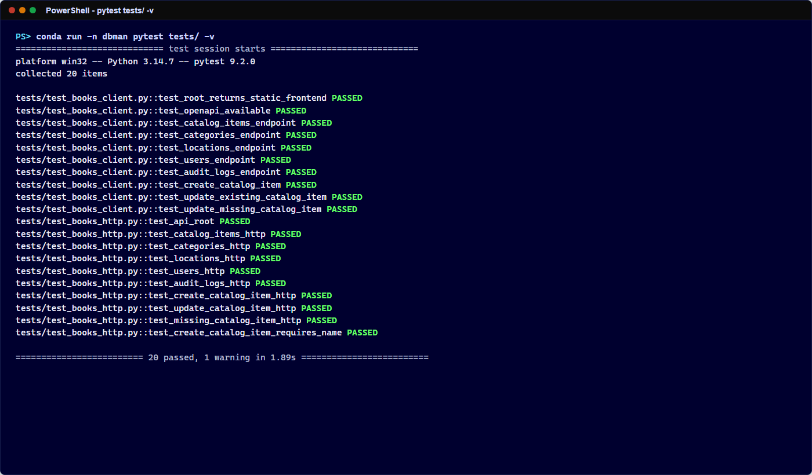
Comando: conda run -n dbman pytest tests/ -v | Resultado: 20 passed.
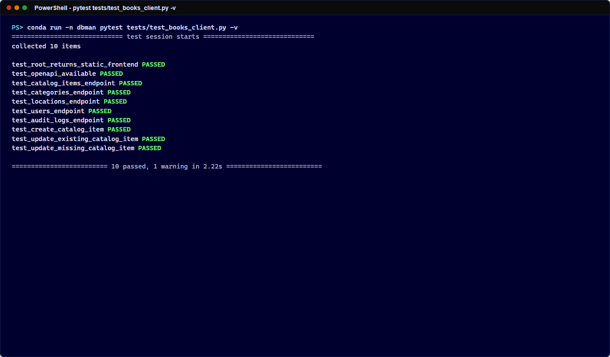
Comando: pytest tests/test_books_client.py -v | Resultado: 10 passed.
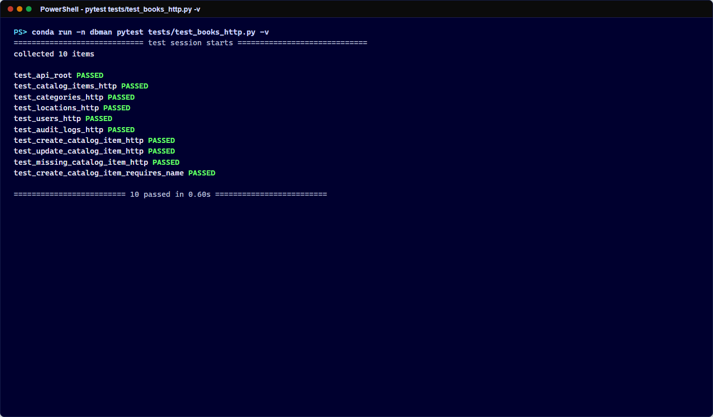
Comando: pytest tests/test_books_http.py -v | Resultado: 10 passed.
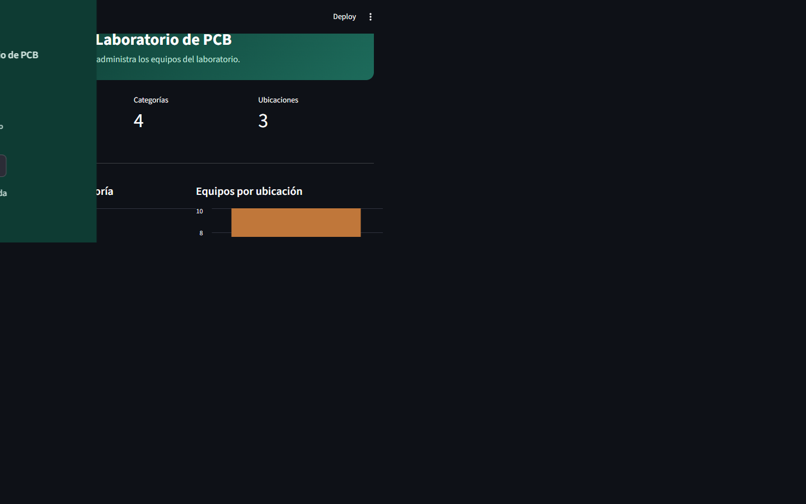
Evidencia de resumen, métricas y gráficos.
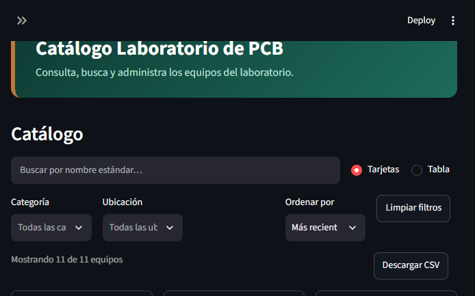
Evidencia de carga y visualización de equipos.
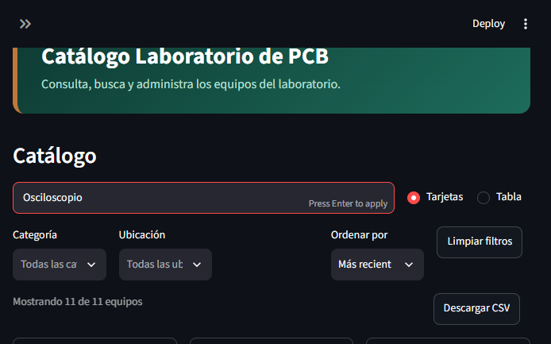
Evidencia de filtro aplicado sobre “Osciloscopio”.
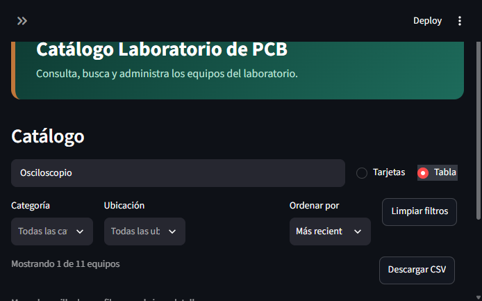
Evidencia del cambio a vista tabular.
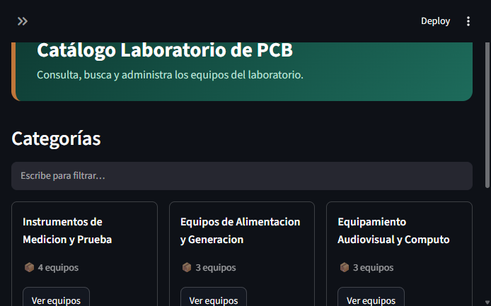
Evidencia de navegación por categorías.
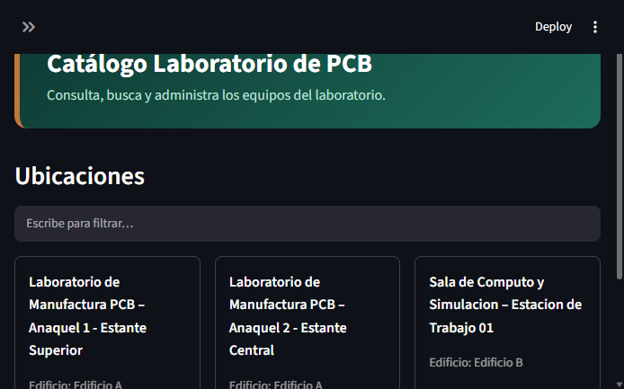
Evidencia de navegación por ubicaciones.
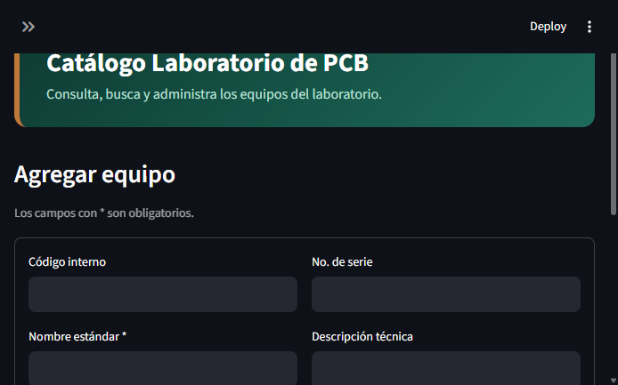
Evidencia del formulario de alta.
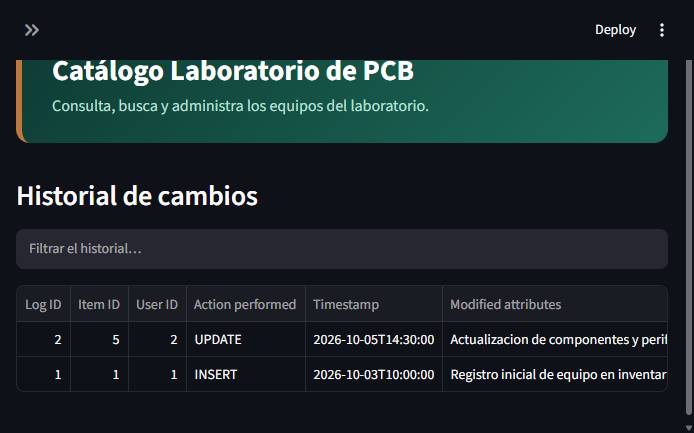
Evidencia de la sección de auditoría.
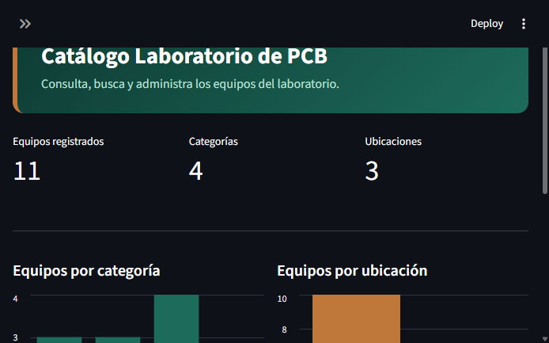
Evidencia visual del layout y navegación lateral.
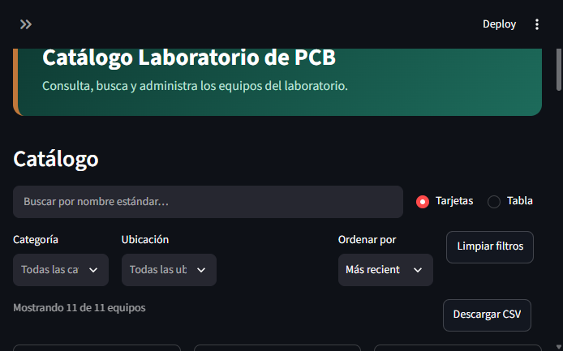
Evidencia de navegación y recarga del catálogo.